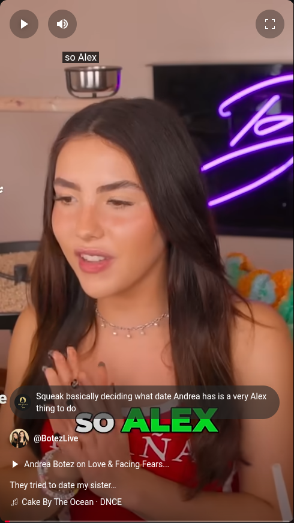
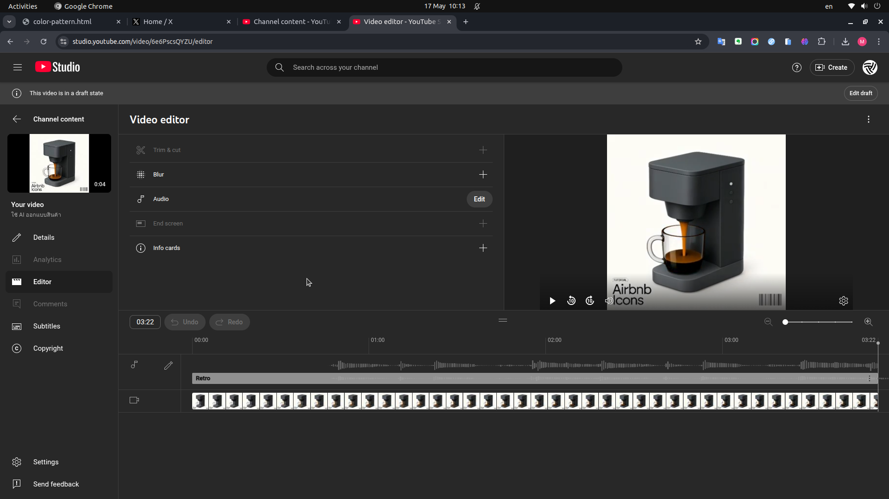
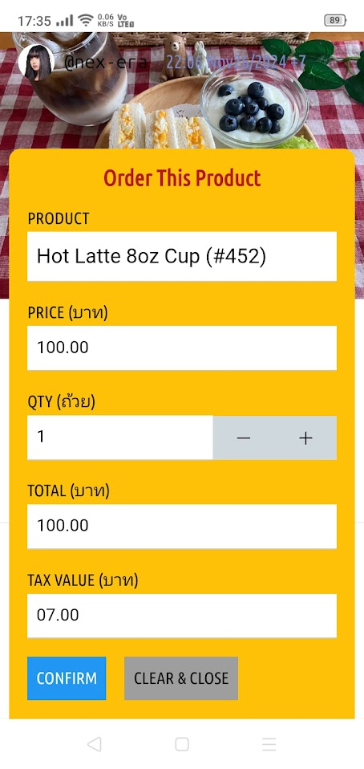

--Tue May 20 2025 15:17:22 GMT+0700 (Indochina Time) version=1.0 by=@advister classify=public domain/cc0
นี่คู่มืออย่างง่ายสำหรับทำ Digital Marketing เบื้องต้นทำเป็น internal document/note ก่อน ยังไม่ publish เป็น public ถือว่าเป็น พื้นฐาน หรือ basic ของการทำ digital marketing ก็แล้วกัน แต่ก็ดู อาจจะ publish ในเว็บไซท์ของ nex-era เร็วๆนี้ก็เป็นไปได้ แต่จะลองใช้ภายในดูก่อน เพื่อให้แน่ใจว่า ไม่มีปัญหา
อยู่ในโลกดิจิตอล เราก็ต้องมี digital id คือ ตัวตน ในโลกดิจิตอล นั่นเอง ก็คือไร คือชื่อ ชื่อนี่สำคัญ มันเป็นศาสตร์ อย่างหนึ่งเลยก็ว่าได้ การตั้งชื่อธุรกิจ องค์กร ชื่อสินค้า ชื่ออะไรก็แล้วแต่ มันจะสะท้อน ถึงสิ่งนั้นๆ ดังนั้น ตั้งชื่อผิด ก็เละ ได้ เช่นสินค้าเราของดีเลย แต่ไปตั้งชื่อโหลยโท่ย ชื่อก๊อกแก๊ก มันก็ทำให้ลูกค้าที่เหมาะกับสินค้านั้น ไม่เอา ไม่เข้าหา เราคิดว่าพวกเซเลบ จะถือของชื่อกะป๊อกกะแป๊ก ไปอวดคนมั๊ยล่ะ ดังนั้น อย่าประมาท เรื่องชื่อ มันเป็นทั้งศาสตร์และศิลป์เลยเรื่องนี้
สรุปว่า หาชื่อที่จะเป็น digital identity ของเราให้เจอ แล้วเราก็จดทะเบียนชื่อนี้ ใน app/platform ต่างๆ โดยใช้ชื่อเดียวกันนี้ หมด คือควรจะเป็นชื่อเดียวกันหมด ในทุกๆ app ไม่ใช่สะเปะสะปะ มันก็ไม่เกิด identity การก่อแบรนด์ มันก็ยาก ยกตัวอย่างของลิซ่า บริษัทเขาชื่อ LLOUD แล้วใช้ชื่อใน digital เป็น @wearelloud ไรแบบนี้เป็นต้น
ดังนั้นเราต้องไปตรวจสอบในทุก app นะ ว่าชื่อที่เราจะใช้ มันซ้ำกับที่มีอยู่แล้วหรือไม่ ตรวจทุกๆ app เลย รวมถึงเช็คกับ domain ด้วย เพราะเราต้องใช้ชื่อนี้ทำ web site ด้วยเช่นกัน สรุปว่า ต้องเอาชื่อเดียวกันหมด มันจะได้เกิด brand/identity
เป็นอันว่า identity ในยุคดิจิตอล จะหน้าตาแบบนี้
@john @nex-era @wearelloud
content หรือเนื้อหา มี 2 แบบ คือ

แบบ vertical หมายถึง video clip สั้นๆ ประมาณ 10-15 วิ +/- ตรงนี้มาตรฐานทั่วไปเป็นอัตราส่วนของมือถือ ที่ดูแนวตั้งคือ 9:16 อัดวีดีโอแล้ว แชร์ไปใน Facebook Reels, Instagram Reels, Titok, YouTube Shorts ต่างๆ พวกนี้
หรือ จริงๆ จะนับ X Post เป็น short ด้วยก็ได้ เพราะโดยมากเขาเขียนตัวหนังสือไม่ยาวมาก ใน X แล้วเราใส่ vertical video เข้าไป ก็ถือว่าเป็นอีก 1 channel ของ vertical content ได้เช่นกัน
** ตรงนี้สำคัญมาก การทำ ver content จะเป็นตัว hook หรือ เกี่ยว หรือ ล่อ ให้คนมาสนใจ main content ของเราต่อไป สรุปว่า vertical เป็นที่เรียกกันว่า teaser ตัวเรียกน้ำย่อย ประมาณนั้น
ข้อมูลเพิ่มเติม ทุกวันนี้คนดูมือถือแนวตั้ง ตลอดเวลา หรือเป็นส่วนใหญ่ นับๆกันแล้ว หลายร้อยล้าน view/เดือน ดังนั้น content ของเราจะต้องมา serve เขาตรงนี้ ไม่ใช่เขาดูตั้ง เราจะไปทำแนวนอน มาให้เขาดู มันก็ไม่ค่อยได้ผล
หรือ horizontal หรือ long content เป็นเนื้อหา หลัก คือมีความยาวมากกว่าแบบ short จะเป็นตัวหนังสือ ภาพ หรือวีดีโอ ก็แล้วแต่ แต่เรียกว่า เป็นฉบับสมบูรณ์ มีเนื้อหา ข้อมูล ของสิ่งนั้นๆ สมบูรณ์แบบ
main content ถ้าเป็นวีดีโอ ก็ควรเป็นสัดส่วน 16:9 คือเหมือนตะแคงมือถือดู ในแนวนอน คนสมัยนี้ดู youtube ทางมือถือเยอะ แล้วนอนดู ก็จะดูแนวนอน เหมือนดูหนัง อะไรที่มันยาวๆ แต่ถ้าไม่ใช่วีดีโอ ก็เป็น web page อะไรแบบนี้ก็ได้ เขาก็ดูแนวตั้งจริงอยู่ แต่มันยาว ต้อง scroll ลงไปเรื่อยๆ จนจบ อะไรทำนองนั้น
สรุปว่า main content เป็นอะไรที่ ยาว ละเอียด มี detail เยอะ ว่างั้น เพราะฉะนั้น ในเรื่อง content นี้ เราจะต้องทำออกเป็น 2 ส่วนนี้ ถ้าเราไปยัดเยียดเอา main content ใส่เขาอย่างเดียว มันไม่ได้ผลเท่าที่ควร คนเราไม่นิยมอ่านไรยาวๆ โดยเฉพาะสมัยนี้
! อันนี้เราพูดกันเฉพาะ fresh หรือ brand new account นะ คือไม่ใช่ top brand, peak brand สมมุติอย่างลิซ่า งี้ เขาโพสไร โพสมาเหอะ คนทั้งโลกก็พร้อมโดดใส่ ..เราไม่ได้หมายถึง account ที่เป็น brand ใหญ่ เราพูดถึง โนเนม ยังไม่มีอะไร การสร้าง brand สร้าง marketing ก็เริ่มจากแบบนี้
! ฝากบอกเคล็ดลับหน่อย สำหรับคนจะทำ video ทุกวีดีโอ จะต้อง มีเสียง อย่าทำวีดีโอเงียบ คนไม่ดู
app ต่างๆ ที่ต้องมี ต้องใช้ กัน ในยุคนี้ หนีไม่พ้น
หลัก เลย ประมาณนี้ จริงๆมีมากกว่านี้ ถ้ามีกำลังพอ ก็ใช้อีกได้ แต่คู่มือนี้เอาประมาณนี้ พอ
สำหรับภาพถ่าย คงไม่ยาก ถ่ายมาแล้วก็ crop แค่นั้น แต่ถ้าจะทำ video จริงๆก็มี app หลายตัว แต่ในนี้จะใช้ตัวที่ง่ายที่สุด คือ YouTube นี่แหละ คือสมมุติเราถ่าย video จากมือถือแล้ว เราก็ share หรือ upload เข้า youtube เสร็จ เราก็สามารถ cut แล้วใส่ เพลง/audio เข้าไป มีเพลงให้เลือกเยอะด้วย แล้วก็ใช้ง่าย ใช้ในมือถือก็ได้ หรือใช้จาก web ใน notebook/laptop ก็ได้

อันนี้เป็น Editor ใน YouTube Studio แต่อันนี้เป็นแบบ web ถ้าเป็นมือถือก็อีกแบบ แต่ก็ง่ายๆ เหมือนกัน เพิ่ม audio สบายๆ เลย
ตัวนี้เป็น screen recorder คือมันบันทึกหน้าจอเรา พอบันทึกเสร็จเราจะแชร์ไปพวก social app เลยก็ได้ แต่ว่าแนะนำว่า เราก็แชร์ไปที่ youtube ก่อน แล้วเราใส่ audio เข้าไป หรือเอาไป cut ให้มันเอาเฉพาะช่วงที่เราต้องการ คิดว่าการ cut น่าจะทำใน notebook/tablet ง่ายกว่า พอทำใน youtube เสร็จ ค่อย download ไปแชร์ใน platform อื่น
นอกจาก YouTube Studio อาจใช้ app พวก CapCut ก็ได้ มีแบบ online/web ไม่ยาก
หลักในการทำ digital marketing อย่างหนึ่ง ก็คือ ความถี่ คือเราต้องโพส สม่ำเสมอ โพสเรื่อยๆ ต้องมีเรื่องทุกวัน ว่างั้น ถ้าคิดง่ายๆ อย่างน้อยๆก็วันละ 5 โพส อย่างพอดีก็ 10 ถ้ามากกว่า 10 ก็ยิ่งดี อันนี้นับต่อ app/platform นะ ดังนั้น พยายามรักษาระดับ ประมาณนี้ไว้ ไม่ใช่ไม่มีไร update เลย ปล่อยร้าง ไปดูบาง account โพสล่าสุด ปีที่แล้ว เงี้ย ก็จบกัน สักแต่ว่ามี account แต่ไม่ได้ทำ digital marketing ใดๆเลย
สรุป
ไม่ใช่ว่าโพสซ้ำๆ ของเดิม แต่ว่า อาจมีการปรับโน่นนี่ อย่างพวก vertical/short เนี่ย ถี่ๆได้เลย เพราะมันกระจายไปในวงกว้าง ดังนั้น vertical content ส่งได้เรื่อยๆเลย ส่วนตัว main content เราก็อย่างละ 1 แต่ก็ต้องมีเรื่อยๆ อย่าให้ห่าง
อันนี้เป็นตัวอย่างกราฟแสดงให้เห็นว่า คนดูเขาดู video/short เรา ต่อเนื่อง แค่ไหน ในช่วง 60 นาที ย้อนหลัง อันนี้มีใน youtube ไปดูได้
ใน app แต่ละตัว ก็มีเครื่องมือให้เราดูข้อมูล ว่าโพสเรา หรือ account เรา มีคนติดตามเท่าไหร่ มี view เท่าไหร่ อะไรต่างๆ ดังนั้น เราก็ต้องคอย monitor (เฝ้าดู)
อย่างอันนี้เป็นของ YouTube เข้าไปดูใน YouTube Studio จะมี Analytics อยู่ มีข้อมูลมากพอสมควร พอที่จะดูผลประกอบการได้
อันนี้ของ Facebook จะเรียก insight เห็นกราฟว่า ใน 4 week จำนวน view มีความเคลื่อนไหวอย่างไร ข้อมูลพวกนี้ ทีม digital marketing ต้องเรียกว่า ตั้งจอ monitor กันไว้เลย เรียกว่าจับตาไม่กระพริบกันเลย ว่ามัน hit ไหม viral ไหม เนี่ย งานสำคัญของทีม digital marketing
ง่ายๆคือ เราต้องไปกด like, share, comment หรือแสดง feeling emoji ต่างๆ ไม่ใช่ว่าแข็งทื่อ เหมือนไม่ใช่คน แบบนั้น ดังนั้น ต้องเคลื่อนไหว มีชีวิตชีวา movement, activity ต่างๆ ตลอด มีคนมา comment เราก็ตอบ หรือเราไป like เขา comment เขา อะไรแบบนั้น สิ่งเหล่านี้ บริษัทร้านรวงต่างๆ พลาดเยอะ คือไม่ค่อยมี conversation
การพูดคุยกันนี้ (conversation) นี้จะทำให้เกิดการกระเพื่อม หรือเพิ่มการ view ได้มากขึ้น ยิ่งคุยกันมาก view ก็ยิ่งมาก มี impact มากขึ้น เหมือนไวรัส หรือ viral คือมันจะแพร่ ติดกันไป เรื่อยๆ ดังนั้นพยายามอย่าให้โพส ตาย คือพยายามให้เกิดการพูดคุยกัน ไปเรื่อยๆ กด like, share, comment อะไรต่างๆ
สรุป
อันนี้ เป็นขั้นตอนที่ ลูกค้า หรือคนที่ดูข้อมูลเรา เริ่ม จริงจัง ล่ะ (ภาษาอังกฤษว่า serious) หมายความว่าเขาเริ่มอ่าน เริ่มติดตาม เป็นหนัง วีดีโอยาวๆ เขาก็ดูยาว หรือเป็นบทความ ข่าวสารไร เขาก็ตั้งใจอ่าน แบบนี้เรียกว่า คนนั้นเข้าสู่เฟส attention คือสนใจ จริงจัง
ตรงนี้เปรียบเสมือนว่า เขาพิจารณาสินค้า-บริการ ของเราล่ะ แต่ว่าอาจยังไม่ตัดสินใจ แต่ว่าจริงจัง อะไรประมาณนั้น แต่ถ้าเป็น content ที่ไม่ใช่ค้าขาย สินค้า-บริการ ก็อาจว่า เริ่มชอบ จะติดตามล่ะ ว่างั้น
! ศัพท์แสงทางด้านนี้ มันยังไม่ลงตัว แต่ละเจ้า แต่ละที่ก็อาจเรียกไม่เหมือนกัน เช่นบางคนเรียก engage, engagement ก็มี แต่เรายังไม่ต้องกังวล ของเราเอาตามนี้ไปก่อน ขอให้เข้าใจความหมาย/หลักการ
ตรงนี้ อาจเทียบได้กับการ ปิดการขาย การตลาดสมัยนี้ ควรผูกเข้ากับการสั่งซื้อ ได้เลย (order) กรณีของเรา ดีที่สุดคือ เราทำปุ่ม order ให้เขากด แล้วไปเปิด order form เลย ทำให้ง่ายๆ แล้วพอเลือกอะไรเสร็จก็ส่ง order เข้าบริษัทไปเลย อันนี้คือสิ่งที่ควรจะเป็น

แต่ละธุรกิจอาจไม่เหมือนกัน ดังนั้นเราต้องออกแบบ action ให้เหมาะสม เช่นธุรกิจโรงแรม action ก็คือการสั่งจองห้อง หรือธุรกิจหมอ/คลีนิค ก็อาจเป็นการจองคิว/นัด ตัดผม-ทำผม-เสริมสวย ก็จองคิว อะไรต่างๆ สรุปว่า เราต้องออกแบบให้ action เป็นไปตามที่ธุรกิจนั้นๆต้องการ
ก็เป็นอันว่างานที่ digital marketing ต้องทำ ควรทำ มีประมาณนี้ เป็นการเบื้องต้น มีเวลาอาจจะเขียนเพิ่มเติม เพื่อให้เรื่องนี้ละเอียดขึ้น ต่อไป